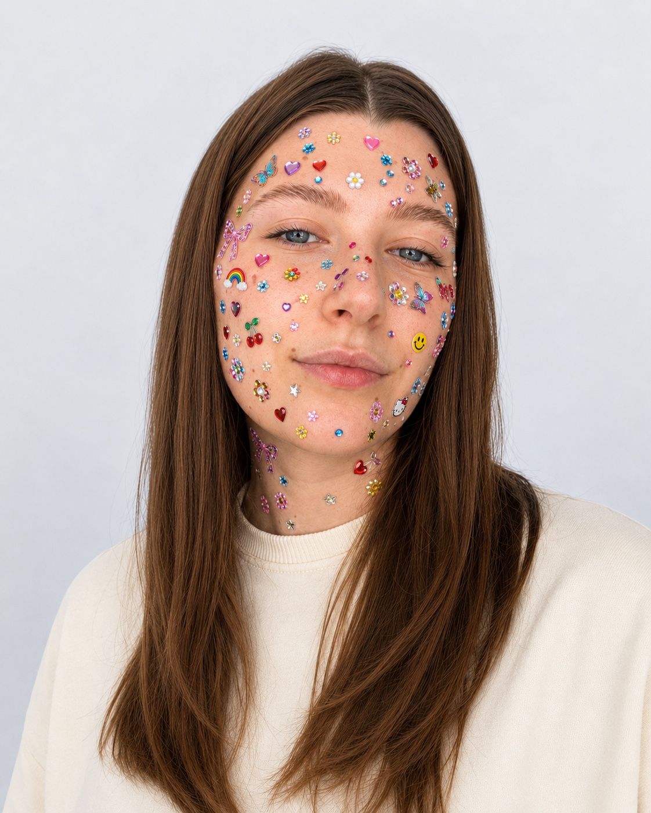

Перевожу между бизнесом и технологиями
Объясняю сложные решения через задачи, ограничения и ценность для бизнеса.
Product · Digital · Business Development
Соединяю бизнес-задачи, технологии и людей. Развиваю цифровые продукты, клиентские направления и партнёрства.
Менеджер цифровых
продуктов и проектов
Я работаю на пересечении управления цифровыми проектами, развития продуктов, клиентских отношений и бизнес-коммуникаций.
Мой путь начался с маркетинга, рекламы, PR и мероприятий, а продолжился в digital и IT: веб-разработка, техническая поддержка, интеграции, SEO и AI-продукты.
Сегодня я не только отвечаю за реализацию клиентских задач, но и участвую в создании новых направлений: исследую рынок, формирую предложения, организую команды, ищу партнёрства и возможности для продвижения.
Мне необязательно самой знать каждый ответ. Мне важно создать систему, в которой ответ будет найден, а задача — решена.
Сильнее всего я там, где нужно одновременно разобраться, договориться, собрать людей и запустить работу.
Объясняю сложные решения через задачи, ограничения и ценность для бизнеса.
Определяю, какой экспертизы не хватает, подключаю людей и AI, выстраиваю взаимодействие.
Чувствую динамику коммуникации и объединяю людей с разными интересами вокруг общей цели.
Ищу продукты, форматы услуг, рынки, партнёрства и способы сделать экспертизу компании заметной.
Я не стремлюсь быть самым глубоким техническим специалистом в команде. Моя роль — понимать достаточно, чтобы задавать правильные вопросы, находить сильные решения и объединять вокруг них людей.
Требования, декомпозиция, оценка, команда, сроки, бюджет и коммуникация с клиентом.
Выявление потребностей, презентация решений, управление ожиданиями и долгосрочные отношения.
Поиск реальной задачи, формирование гипотез и сравнение решений по сложности и ценности.

Серьёзно о работе.Новые направления, корпоративные продажи, партнёрства и выход экспертизы компании на рынок.
Поставленная речь, опыт профильных выступлений и умение адаптировать экспертизу под аудиторию.
Шесть шагов, которые превращают неопределённость в понятный процесс.
Разбираюсь, какую проблему необходимо решить — не только что просят сделать.
Изучаю продукт, пользователей, рынок, ограничения и доступные ресурсы.
Подключаю нужных специалистов, данные и инструменты.
Оцениваю стоимость, сроки, риски и ожидаемую пользу.
Формирую план, распределяю ответственность и контролирую движение.
Защищаю решение, собираю обратную связь и определяю следующие шаги.
Раздел уже готов к наполнению. Здесь появятся задачи, мой вклад, процесс и измеримые результаты.
Кейс готовится
Кейс готовится
Кейс готовится
Профессиональная цель
Мне близки роли на пересечении Product Development, Business Development, Product Marketing, Partnerships, Client Success и AI.
Название должности для меня менее важно, чем возможность влиять на продукт и коммерческий результат, работать с людьми, представлять компанию и развивать профессиональное сообщество вокруг сильной экспертизы.
@bad_project_manager
Пишу честно о работе менеджера: проектах, AI, коммуникации, профессиональном росте и ситуациях, когда красивой инструкции просто не существует.